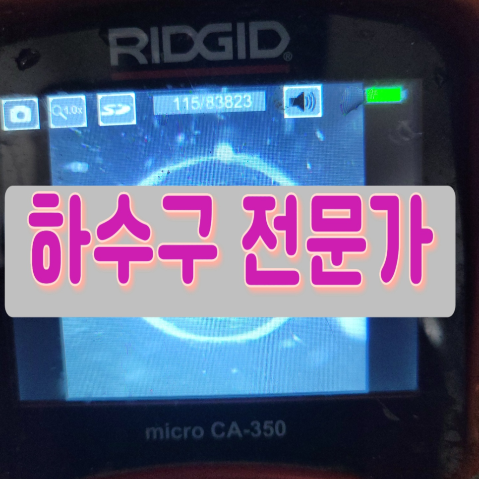
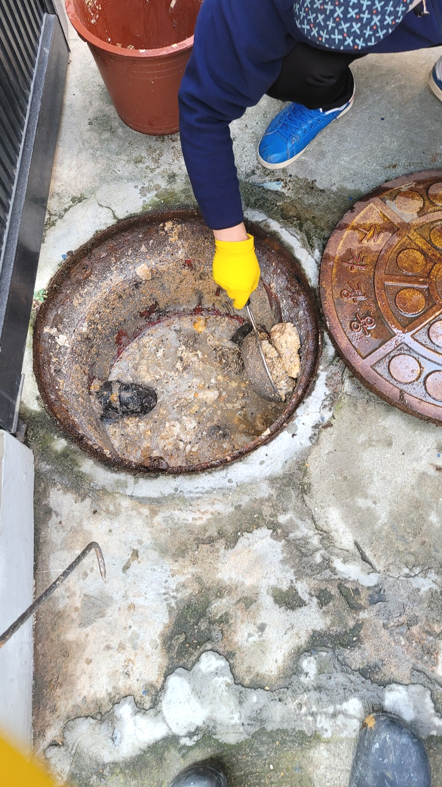
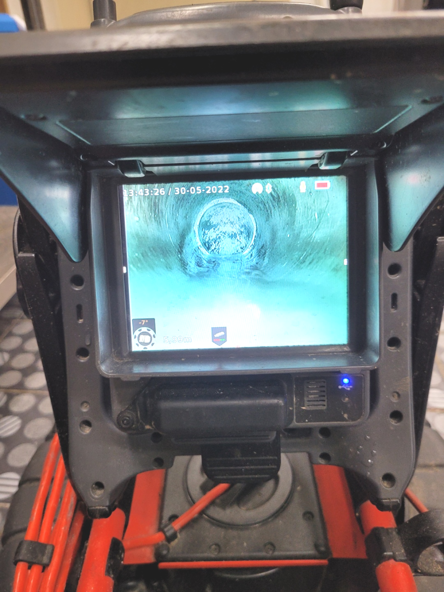
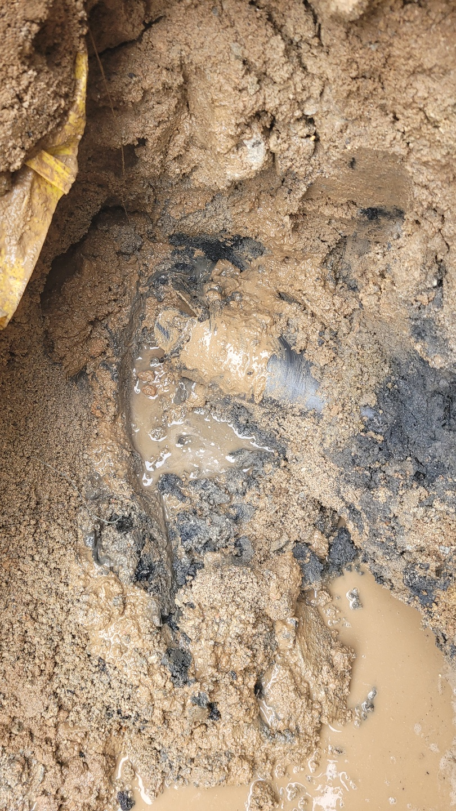
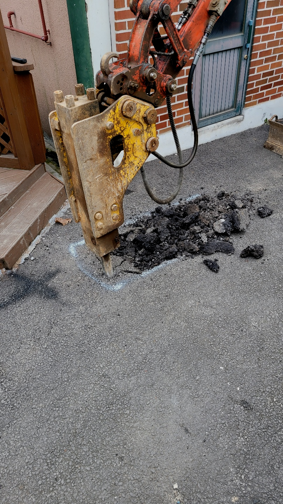
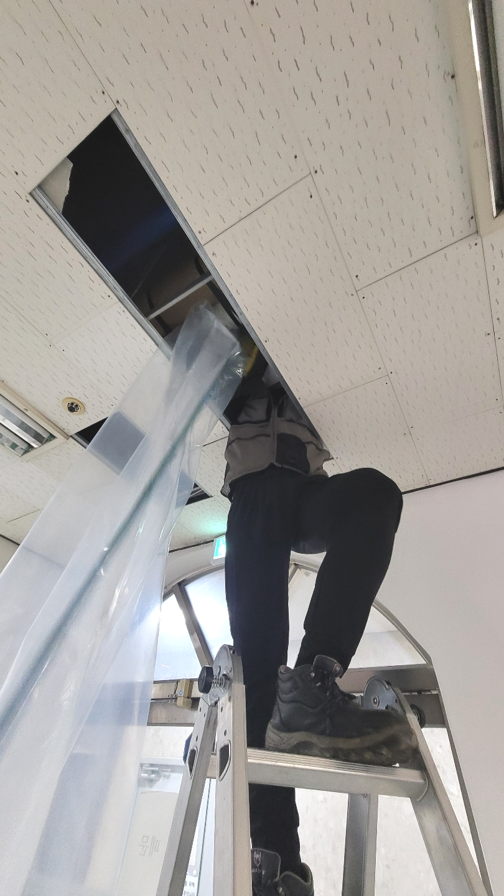
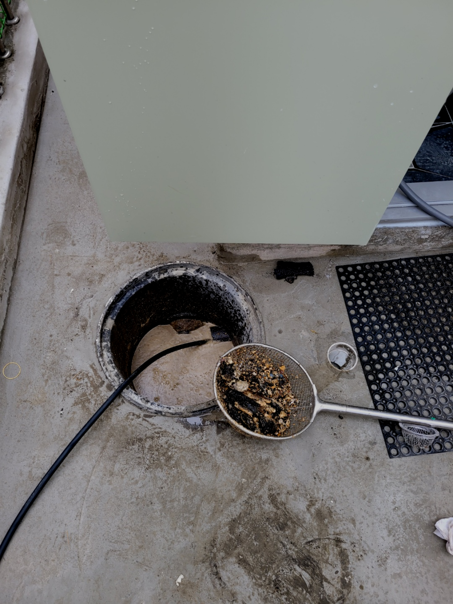

🏠 시흥시 신현동 하수구막힘뚫음 장현동 하수구 설비전문업체 에 맡기세요
시흥 싱크대막힘 전문 시공 후기

📋 작업 개요
- 위치: 시흥
- 서비스 유형: 싱크대막힘, 변기막힘, 하수구막힘, 배관막힘, 역류해결, 뚫는업체, 배관청소
- 작업 일시: 2023. 9. 20. 9:29
- 업체명: 하수구수사대 (010-5615-2118)
🔍 문제 상황
안녕하세요!
하수구수사대 인사드립니다.
오늘은 시흥시 신현동 하수구막힘현장을 다녀왔습니다.
여러 곳에서도 배수구는 우리들의 주위에서 많이 접할 수 있으며 생활하면서 어떠한 경우에도 배제할수 없는 필수품입니다.
조급한 나머지 무조건 행동을 취하고 다양한 업체를 찾아보고 이러다 보면 시간이 더 지연되어 상태가 좋아지기보다 악화되는 경우도 생깁니다.퇴수구 이럴때는 고민만하지 마시고 전문가에게 곧바로 문의하시길 추천드려요.
시흥시 신현동 하수구막힘뚫음 장현동 하수구 설비전문업체 에 맡기세요

🔎 원인 분석
💡 전문가 진단: 시흥시 신현동 하수구막힘뚫음 장현동 하수구 설비전문업체 에 맡기세요
단순 막힘 말고도 역류 같은 문제처럼 퇴수구에는 생길 수있는 증상들은 매우 많습니다. 그럴 때 전문 업체를 통해 뚫기도 하지만 저렴한 곳만 알아보시는 것은 오히려 나중에 더 큰 피해를 커울수 있다는 것을 말씀 드리고 싶습니다.
경력이 중요한 까닭은 배수구 구조를 얼마나 잘 이유하느냐가 작업에 중요하기 때문입니다. 하수관의 원리를 이해하지 못하시는 고객님들은 잘 알지 못하시기 때문에 옳지 못한 방법으로 뚫기를 시도하시는 경우가 빈번합니다.
나도 모르게 음식물 찌꺼기를 버려서 막힐 때도 있지만 이런 경우를 제외하고는 몇 년 동안 고여있던 이물질들이 누적되어배수구 내부에 계속해서 쌓이다 보니 물길 이외에는 더 이상 내려갈 수 없어 막히게 되지요.
성공률도 빼놓을 수 없는 요소겠지만 민첩하게 고칠 수 없다면 모든 손실들은 고객분의 몫이 되므로 가능한 한 빨리 달려나가하수 뚫어드리는 중이랍니다.
대충 배수구뚫어주고 싸게 돈을 받는 업체를 통해 뚫는다면, 얼마 안 되어 다시 막혀도 또 비용을 지불하고 시간도 내고 이러한 일이 반복되다 보면 그제야 한 번 할 때 확실하게 해결하는 곳을 찾으시는 분도 계시더라고요.
특히 현장처럼 배관이 드러나 있지 않고 건물 속이나 땅속에 묻혀있는배수구 배관에 문제가 생겨도 관로 탐지기라는 장비를 활용해서 찾고 상태를 볼수 있습니다. 건물이나 땅을 부수지 않다도 되기 때문에 편리하게 작업을 할수 있습니다.

🔧 작업 과정
내시경 삽입에 따라 깊숙한 부위들까지 내부 문제 구간을 체크해 보실 수 있어배출구가 막혀 있던 원인을 찾아 문제를 바로잡아 드리고 있습니다.
배관 내의 이물질의 양이나 배관의 크기 등에 따라서 적합한 장비를 선택해서 작업을 하게 됩니다. 배수구의 막힘은 원인 해결을 하는 것이 가장 중요한 것인데요 전문 업체에서는 이렇게 상황에 맞는 장비를 사용을 할 수 있기 때문에 근본적인 해결이 가능하다고 할 수 있습니다.
금액을정하고 방문하는게아닌 현장에내방해서 증상을본다음 얼만큼나오게되는지 견적비용을예상해서 말해드리는데요. 상담이여도 대략적인가격을 말씀드릴수는있으나 자세한비용은하수cctv카메라로 파악해야되기에 출장비는 안받고있어요
배수구 일반적으로는 어찌해결해보려고합니다 급해지셔서 서둘러서뚫으실텐데요. 대한민국에서는 막혀버린배수관을 뚫어버리기위한 약품등등들을 살수가있어요.
안아까운 느낌을받으시길 바라기때문에 변기막힘을제외하고 수리해드린곳은 365일내로 하수 또다시막히시면 불찰로나온 문제가아닐시에는 AS를제공하고있답니다
살살쓰신다고해도 쭉사용하시다보면 깊은곳까지 쌓여서 배출구청소도구를 쓰시거나 매일조심스럽게 하는것이 번거롭다고 느끼실겁니다.밤늦게집에 도착하시면 생각조차 안나게돼요
고객분께 여쭤보니 건물에서 사용한 대걸레 등 큰 걸레들에서 나온 이물질을, 따로 걸러내지 않고 바닥으로 흘려보낸 적이 많으며 계속해서 이렇게 청소를 해왔다고 하셨습니다.
저희가 청소를 얼마나 제대로 했는지 작업을 마무리하고 나서는 고객님께 내시경 화면을 보여드립니다. 밖에서 물을 부어서 배수 테스트도 진행하지만, 구석진 부분에 이물질이 존재하거나 굳은 석회가 있는지 확인하는 건 어렵기 때문에 작업한 후 내시경 장비를 통해서 결과를 세세하게 보고해 드리는데요,
또한 시공이 필요한 지점도 관로 탐지기를 통해 발견, 사장님께 알려드렸습니다. 저희는 이처럼 작업의 규모를 가리지 않고 빠르게 출동하여 해결을 도와드립니다.


✅ 작업 완료
배관청소는 플렉스샤프트라는 장비를 사용하는데요 와이어 앞쪽에 체인이 회전을하면서 하수배관벽면에 붙어있는 기름덩어리를 분쇄해주는 방식입니다. 회전반경이 배관크기보다 작기때문에 배관에 무리를 주지않고 작업이 가능해요.
스케줄에 맞게 미리 조정도 해드리기 때문에 받고 싶으실 때 만족스러운 결과 보시길 바랍니다. 뚫고 나서 돌아봐도 연락한 게 다행이라고 느끼시게끔 말끔하게 뚫어내겠습니다.
#하수구막힘 #하수구뚫음 #하수구역류 #씽크대막힘 #싱크대역류 #오수관막힘 #하수구청소 #욕실하수구막힘 #변기막힘 #하수구뚫는비용 #싱크대수리 #화장실막힘




⚠️ 주방 싱크대 배관 막힘 예방 수칙
- ✅ 기름기가 묻은 식기나 프라이팬은 설거지 전 키친타올로 반드시 기름때를 닦아내세요.
- ✅ 주기적으로 싱크대 개수대에 뜨거운 물을 가득 받아 한 번에 내려 배관 내부 기름을 씻어내세요.
- ✅ 배수구 거름망을 미세한 필터로 사용하시고 음식물 찌꺼기가 틈으로 새어 들지 않게 관리하세요.
- ✅ 베이킹소다와 식초를 뜨거운 물과 함께 일주일에 한 번씩 부어주면 배관 살균과 막힘 예방에 좋습니다.
💡 핵심 정리
- 확실한 장비 작업(내시경 점검 및 샤프트 스케일링)으로 원인을 뿌리 뽑습니다.
- 작업 후 1년 이내에 동일한 부위 재발 시 100% 무상 A/S 서비스를 보장합니다.
- 서울 · 경기 · 인천 전 지역에 24시간 언제든 긴급 출동할 수 있도록 항시 대기 중입니다.
❓ 자주 묻는 질문 (FAQ)
🚨 시흥 싱크대막힘 문제로 고민이신가요?
정확한 원인 진단과 확실한 시공으로 재발 없는 해결을 약속드립니다.
24시간 긴급 출동 | 서울 · 경기 · 인천 전지역 | 1년 내 재발 시 무상 A/S